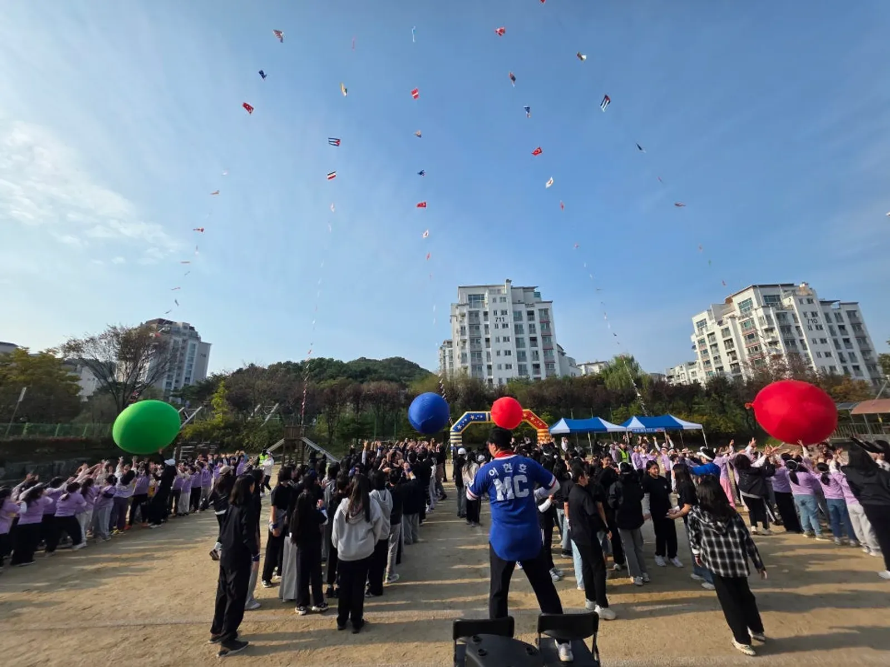
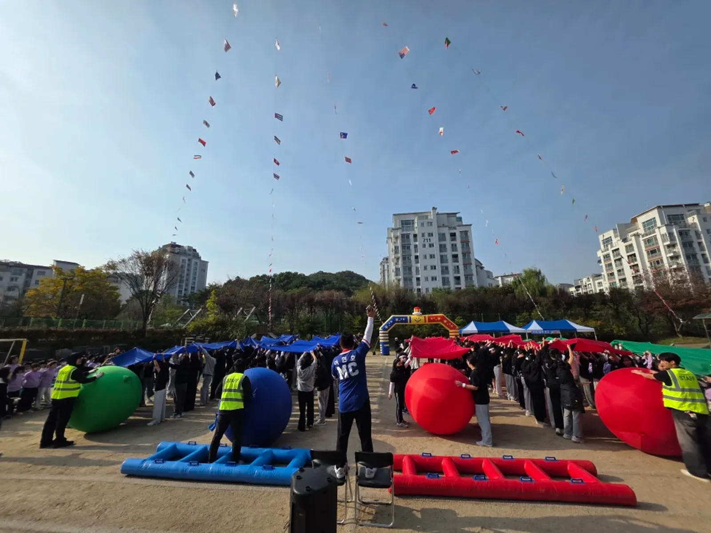
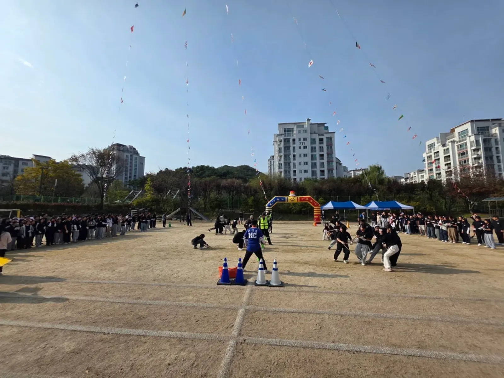

노원 행사 준비 · 2026년 10월 28일
노원 초등학교 운동회 업체 고르기 — 종목 · 동선 · 음향 준비표
노원 초등학교 운동회 업체를 고를 때는 "무슨 게임을 하느냐"보다 학생이 언제 출발하고 어디서 기다리며 누구와 교대하는지를 먼저 물어보는 것이 좋습니다. 운동회의 흐름은 종목보다 이동과 대기에서 갈리기 때문입니다. 이 글은 담당 선생님이 업체와 상담하기 전에 정리해 두면 좋은 것들을 순서대로 담았습니다.

- 운동회 상담 전에 학년별 학생 수, 운동장 크기, 진행 시간, 우천 시 강당 사용 여부 네 가지를 정리해 두면 상담이 빨라집니다.
- 종목은 학년마다 따로 짜고, 전교생이 함께하는 단체 게임은 시작과 끝에 둡니다.
- 운동장은 소리가 흩어지는 공간이라 본부석 스피커만으로는 뒤쪽 학년까지 잘 들리지 않을 수 있습니다.
- 진행자가 설명하는 동안 경기용품을 준비하고 학생 이동을 안내할 사람을 따로 두어야 시간이 밀리지 않습니다.
1. 노원 초등학교 운동회, 업체에 연락하기 전에 정리할 것
힐링엔터테인먼트는 노원구 덕릉로 595 본사가 있는 곳에서 출발합니다. 노원 안의 학교(상계동 · 중계동 · 하계동 · 공릉동 · 월계동 등)는 가까이서 바로 찾아갈 수 있어 사전 확인을 여러 번 하기에도 부담이 적습니다. 그래도 첫 상담에서 아래 내용이 정리되어 있으면 프로그램 초안이 훨씬 빨리 나옵니다.
| 확인할 것 | 왜 필요한가 | 메모 |
|---|---|---|
| 학년별 학생 수 | 종목 크기와 경기 회차가 정해진다 | 학급 수도 같이 |
| 운동장 크기 · 바닥 | 대형 공 굴리기 · 이어달리기 코스를 정한다 | 흙 · 인조잔디 구분 |
| 진행 시간 | 오전만인지 종일인지에 따라 종목 수가 달라진다 | 점심 · 하교 시간 |
| 학부모 참관 여부 | 관람 구역과 이동 통로를 따로 잡아야 한다 | 주차 안내 포함 |
| 우천 시 대안 | 강당 · 체육관 사용 가능 여부 | 날짜 연기 기준도 |
2. 학년별 종목 짜기 — 전교생 게임은 처음과 끝에
같은 운동장, 같은 시간이라도 1학년과 6학년이 할 수 있는 종목은 다릅니다. 저학년은 규칙이 짧고 결과가 바로 보이는 종목, 고학년은 팀 전략이 들어가는 종목이 잘 맞습니다. 전교생이 함께하는 단체 게임은 운동회 처음(분위기 만들기)과 끝(마무리)에 두면 흐름이 자연스럽습니다.
| 순서 | 구성 예 | 진행 포인트 |
|---|---|---|
| 시작 | 준비 체조 · 전교생 응원 맞추기 | 모든 학년이 한 번에 움직인다 |
| 저학년 구간 | 큰 공 함께 옮기기 · 짧은 릴레이 | 설명은 짧게, 시범을 먼저 |
| 고학년 구간 | 팀 대항 게임 · 학년별 이어달리기 | 출발 신호와 교대 위치를 표시 |
| 전체 경기 | 단체 줄다리기 · 대형 천 게임 | 학년별 대기 위치를 미리 정한다 |
| 마무리 | 대동놀이 · 시상 | 모두가 함께 원을 그리며 끝낸다 |

마무리의 「대동놀이」는 힐링엔터테인먼트의 시그니처 프로그램입니다. 이기고 지는 경기 뒤에 모두가 어깨를 맞대고 함께 움직이는 시간이 있으면, 승패와 상관없이 운동회가 하나로 끝납니다.
3. 대기 · 출발 · 교대 동선이 운동회를 좌우합니다
운동회가 늘어지는 가장 큰 이유는 경기 자체가 아니라 다음 팀이 준비되지 않아 생기는 빈 시간입니다. 그래서 상담할 때 종목표와 함께 학년별 대기 위치, 출발선, 들어오는 길을 그림으로 같이 잡아 두는 것이 좋습니다.
- 학년별 대기 구역을 운동장 가장자리에 정하고, 경기 전 학년이 미리 이동해 앉아 있게 합니다.
- 출발선과 교대 지점은 콘이나 표지로 눈에 보이게 표시합니다.
- 경기가 끝난 팀이 나가는 길과 다음 팀이 들어오는 길을 겹치지 않게 나눕니다.
- 진행자가 다음 종목을 설명하는 동안 보조 진행 요원이 경기용품을 깔아 둡니다.

4. 운동장 음향과 본부석 — 뒤쪽 학년까지 들리게
운동장은 벽이 없어 소리가 흩어집니다. 본부석 앞에서는 크게 들려도 반대편 끝 대기 구역에서는 진행자 목소리가 잘 들리지 않는 경우가 있습니다. 운동장 크기와 학생 수를 알려 주시면 스피커 위치와 무선 마이크 수를 그에 맞춰 준비합니다.
- 본부석: 진행 마이크, 음악 재생, 시상 물품을 한곳에 모읍니다.
- 스피커: 본부석 쪽 한 곳보다 운동장 양쪽에 나눠 두는 편이 고르게 들립니다.
- 전원: 본부석 가까운 콘센트 위치를 미리 알려 주시면 선 길이를 맞춥니다.
- 천막: 본부석 · 응원석 그늘이 필요하면 견적 단계에서 함께 말씀해 주세요.
5. 견적 문의할 때 고르는 항목
운동회 비용은 날짜 · 장소 · 인원 · 진행 시간 · 프로그램 · 필요한 장비에 따라 달라 정해진 가격표가 없습니다. 자동 견적서에서 필요한 항목을 고르고 날짜와 학교 이름을 적어 보내 주시면 확인 후 견적을 안내드립니다.
| 항목 | 언제 필요한가 |
|---|---|
| 학교 운동회 · 체육대회 | 기획 · 종목 구성 · 진행 전체 |
| 대표 MC 이현호 진행 | 운동회 전체 진행 |
| 진행 보조 · 운영 스탭 | 경기 진행 · 이동 안내 · 용품 준비 |
| 체육대회 게임도구 | 대형 공 · 대형 주사위 · 에어사다리 등 |
| 음향 (대형) | 운동장 · 학생 수가 많은 경우 |
| 천막 | 본부석 · 응원석 |
노원 안의 다른 행사 준비는 노원 행사 안내에, 학교 운동회 현장 기록은 초등학교 가을 운동회 이야기에 있습니다.
자주 묻는 질문
운동회 날 비가 오면 어떻게 하나요?
강당이나 체육관을 쓸 수 있는지를 상담 때 먼저 여쭙니다. 실내로 옮기면 종목과 음향 구성이 달라지므로, 비가 올 때의 종목표를 따로 하나 만들어 두는 것을 권합니다.
MC 진행만 맡길 수도 있나요?
네. 필요한 것만 맡기셔도, 처음부터 끝까지 맡기셔도 됩니다. 종목과 용품을 학교에서 준비하시면 진행과 음향만 맞춰 드립니다.
몇 주 전에 연락하면 되나요?
봄 · 가을은 운동회가 몰리는 때라 날짜가 정해지는 대로 먼저 연락 주시는 편이 좋습니다. 행사 중엔 통화가 어려우니 문자 · 카톡으로 날짜 · 학교 · 인원을 남겨 주세요.
행사 날짜가 정해지셨나요?
날짜 · 지역 · 인원 · 행사 종류만 알려 주시면 행사에 맞춰 상담 · 견적을 안내드립니다. 행사 중엔 통화가 어려우니 문자 · 카톡을 남겨 주세요.